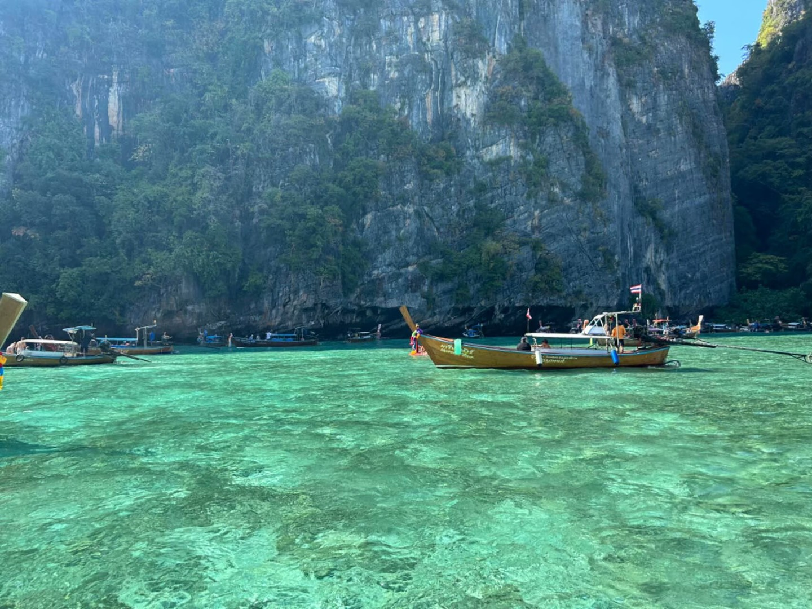

Sichuan
都江堰
大熊猫基地
峨眉山
九寨沟
九寨沟
三星堆
乐山
乐山
青城山
Thailand
大皇宫
郑王庙
水门寺大佛
朱拉隆功大学
甲米
伦披尼公园

皮皮岛
玛雅海湾
洛克岛
Guangdong
松山湖
滨海大厦窗外
虎门
顺德
大鹏
盐田港
Beijing
北京大学
北京大学
北京大学
Hongkong
囍帖街
香港中文大学
Hubei
省实验明远楼
武汉大学
省图书馆
棋盘街
Chongqing
弹子石老街
洪崖洞
Shandong
养马岛甲士
养马岛
青岛天主教堂
海军博物馆
Shanghai
陆家嘴三件套
武康路
Zhejiang
湖州莫干山
湖州剑池
之江文化中心
宋城演艺
绍兴鲁迅故里
绍兴书圣故里
绍兴八字桥
西湖郭庄
杭州青山湖
杭州植物园
杭州西溪湿地
杭州灵隐寺
Jiangsu
苏博
狮子林
盘门